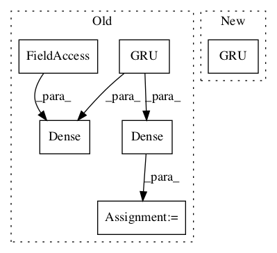

b68db1aaf6abe4d2cea8321cc6f1564228dd60f5,deepchem/models/tensorgraph/models/seqtoseq.py,SeqToSeq,_create_encoder,#SeqToSeq#Any#Any#,145

Before Change
for i in range(n_layers):
if dropout > 0.0:
prev_layer = layers.Dropout(dropout, in_layers=prev_layer)
prev_layer = layers.GRU(
self._embedding_dimension, self.batch_size, in_layers=prev_layer)
prev_layer = layers.Gather(in_layers=[prev_layer, self._gather_indices])
if self._variational:
self._embedding_mean = layers.Dense(
self._embedding_dimension, in_layers=prev_layer)
self._embedding_stddev = layers.Dense(
self._embedding_dimension, in_layers=prev_layer)
prev_layer = layers.CombineMeanStd(
[self._embedding_mean, self._embedding_stddev], training_only=True)
return prev_layer
After Change
for i in range(n_layers):
if dropout > 0.0:
prev_layer = Dropout(rate=dropout)(prev_layer)
prev_layer = GRU(
self._embedding_dimension, return_sequences=True)(prev_layer)
prev_layer = Lambda(lambda x: tf.gather_nd(x[0], x[1]))(
[prev_layer, gather_indices])
return tf.keras.Model(inputs=[input, gather_indices], outputs=prev_layer)
In pattern: SUPERPATTERN
Frequency: 3
Non-data size: 6
Instances
Project Name: deepchem/deepchem
Commit Name: b68db1aaf6abe4d2cea8321cc6f1564228dd60f5
Time:
Author: null
File Name: deepchem/models/tensorgraph/models/seqtoseq.py
Class Name: SeqToSeq
Method Name: _create_encoder
Project Name: deepchem/deepchem
Commit Name: b68db1aaf6abe4d2cea8321cc6f1564228dd60f5
Time:
Author: null
File Name: deepchem/models/tensorgraph/models/seqtoseq.py
Class Name: AspuruGuzikAutoEncoder
Method Name: _create_decoder
Project Name: deepchem/deepchem
Commit Name: b68db1aaf6abe4d2cea8321cc6f1564228dd60f5
Time:
Author: null
File Name: deepchem/models/tensorgraph/models/seqtoseq.py
Class Name: SeqToSeq
Method Name: _create_decoder